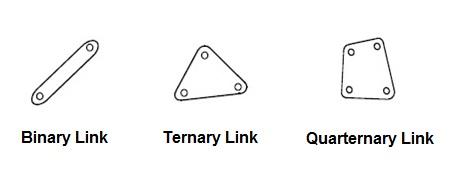
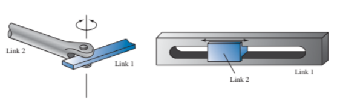

Links
Links are the individual parts of the mechanism. They are considered rigid bodies which means they remain the same shape and don't bend or flex. However, a true rigid body doesnt exist and all parts of a machine are subject to some level of flexablity. A link is like an arm, connecting to other links with joints to transmit motion between each link. Links can be defined by the number of joints or other links they connect to.
Joints
Joints are simple a flexible connection between 2 or more links. Joints are found in alost every machine and allow for motion between links. However not all joint are the same. The are many types of joint that can be combined togetethor to form to make comples motion withen machines. Two primary joints are the Pin Joint and the Slider Joint. The pin joint allows for free rotation betwenn 2 links and the slider joint allows for linear motion between 2 joint.
Linkages
A linkage is a assembly of links and joints. Linkages can be described by the individual joints used or by the movment of the links. More joints and linkages can be explored on the examples page.